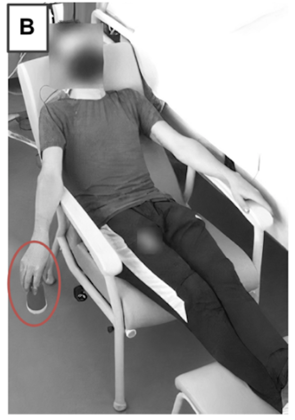
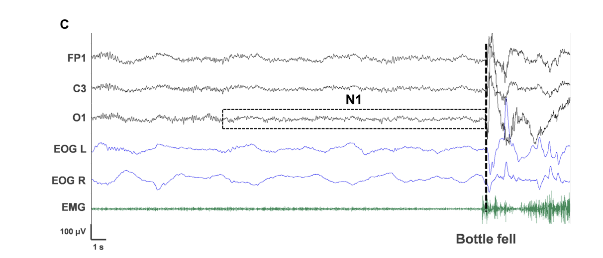
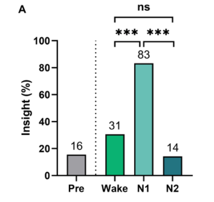

"I saw a big cliff and I was climbing it. Then, boom, it (the bottle) fell and brought me back to reality."

People often have vivid visual experiences when they're awakened from a brief sleep.

You can see if a person is in N1 sleep if they are wearing a special net that lets you look at their electrical spikes of their brainwaves.
N1 sleep is the hazy part of consciousness, in between sleep and wakefulness.
Falling alseep with an object in your hand and awaking to its crashing on the floor is one way to capture the creative spark of N1 sleep.

People are more likely to find hidden answers to problems and catch creative sparks after drifting into N1 sleep... but only if they awake before N2.